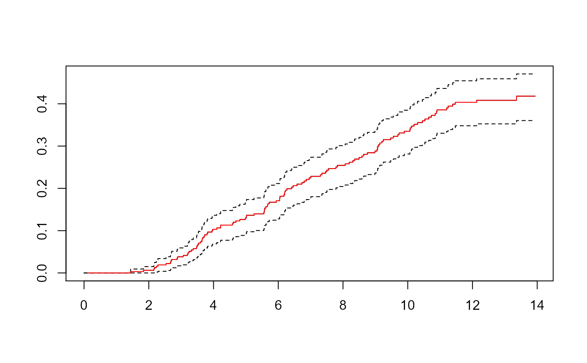
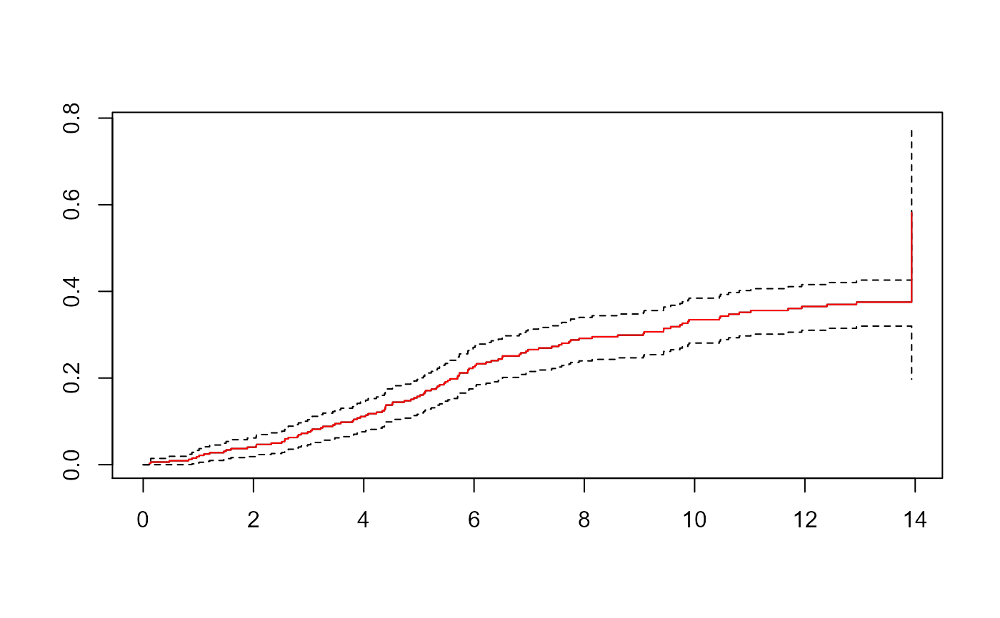

Function to create weighted data set for competing risks analyses
Source:R/crprep.R
crprep.default.RdThis function converts a dataset that is in short format (one subject per line) into a counting process format with time-varying weights that correct for right censored and left truncated data. With this data set, analyses based on the subdistribution hazard can be performed.
Usage
# Default S3 method
crprep(
Tstop,
status,
data,
trans = 1,
cens = 0,
Tstart = 0,
id,
strata,
keep,
shorten = TRUE,
rm.na = TRUE,
origin = 0,
prec.factor = 1000,
...
)Arguments
- Tstop
Either 1) a vector containing the time at which the follow-up is ended, or 2) a character string indicating the column name in
datathat contains the end times (see Details).- status
Either 1) a vector describing status at end of follow-up, having the same length as
Tstop, or 2) a character string indicating the column name that contains this information.- data
Data frame in which to interpret
Tstart,status,Tstart,id,strataandkeep, if given as character value (specification 2, "by name").- trans
Values of
statusfor which weights are to be calculated.- cens
Value that denotes censoring in
statuscolumn.- Tstart
Either 1) a vector containing the time at which the follow-up is started, having the same length as
Tstop, or 2) a character string indicating the column name that contains the entry times, or 3) one numeric value in case it is the same for every subject. Default is 0.- id
Either 1) a vector, having the same length as
Tstop, containing the subject identifiers, or 2) a character string indicating the column name containing these subject identifiers. If not provided, a columnidis created with subjects having values 1,...,n.- strata
Either 1) a vector of the same length as
Tstop, or 2) a character string indicating the column name that contains this information. Weights are calculated for per value in this vector.- keep
Either 1) a data frame or matrix or a numeric or factor vector containing covariate(s) that need to be retained in the output dataset. Number of rows/length should correspond with
Tstop, or 2) a character vector containing the column names of these covariates indata.- shorten
Logical. If true, number of rows in output is reduced by collapsing rows within a subject in which weights do not change.
- rm.na
Logical. If true, rows for which
statusis missing are deleted.- origin
Substract origin time units from all Tstop and Tstart times.
- prec.factor
Factor by which to multiply the machine's precision. Censoring and truncation times are shifted by prec.factor*precision if event times and censoring/truncation times are equal.
- ...
Further arguments to be passed to or from other methods. They are ignored in this function.
Value
A data frame in long (counting process) format containing the covariates (replicated per subject). The following column names are used:
- Tstart
start dates of dataset
- Tstop
stop dates of dataset
- status
status of the subject at the end of that row
- weight.cens
weights due to censoring mechanism
- weight.trunc
weights due to truncation mechanism (if present)
- count
row number within subject and event type under consideration
- failcode
event type under consideration
The first column is the subject identifier. If the argument "id" is missing,
it has values 1:n and is named "id". Otherwise the information is taken from
the id argument.
Variables as specified in strata and/or keep are included as
well (see Details).
Details
For each event type as specified via trans, individuals with a
competing event remain in the risk set with weights that are determined by
the product-limit forms of the time-to-censoring and time-to-entry
estimates. Typically, their weights change over follow-up, and therefore
such individuals are split into several rows. Censoring weights are always
computed. Truncation weights are computed only if Tstart is
specified.
If several event types are specified at once, regression analyses using the
stacked format data set can be performed (see Putter et al. 2007 and Chapter
4 in Geskus 2016). The data set can also be used for a regression on the
cause-specific hazard by restricting to the subset subset=count==0.
Missing values are allowed in Tstop, status, Tstart,
strata and keep. Rows for which Tstart or Tstart
is missing are deleted.
There are two ways to supply the data. If given "by value" (option 1), the
actual data vectors are used. If given "by name" (option 2), the column
names are specified, which are read from the data set in data. In
general, the second option is preferred.
If data are given by value, the following holds for the naming of the
columns in the output data set. If keep, strata or id
is a vector from a (sub)-list, e.g. obj$name2$name1, then the column name is
based on the most inner part (i.e.\ "name1"). If it is a vector of the form
obj[,"name1"], then the column is named "name1". For all other vector
specifications, the name is copied as is. If keep is a data.frame or
a named matrix, the same names are used for the covariate columns in the
output data set. If keep is a matrix without names, then the covariate
columns are given the names "V1" until "Vk".
The current function does not allow to create a weighted data set in which the censoring and/or truncation mechanisms depend on covariates via a regression model.
References
Geskus RB (2011). Cause-Specific Cumulative Incidence Estimation and the Fine and Gray Model Under Both Left Truncation and Right Censoring. Biometrics 67, 39–49.
Geskus, Ronald B. (2016). Data Analysis with Competing Risks and Intermediate States. CRC Press, Boca Raton.
Putter H, Fiocco M, Geskus RB (2007). Tutorial in biostatistics: Competing risks and multi-state models. Statistics in Medicine 26, 2389–2430.
Examples
data(aidssi)
aidssi.w <- crprep("time", "cause", data=aidssi, trans=c("AIDS","SI"),
cens="event-free", id="patnr", keep="ccr5")
# calculate cause-specific cumulative incidence, no truncation,
# compare with Cuminc (also from mstate)
ci <- Cuminc(aidssi$time, aidssi$status)
sf <- survfit(Surv(Tstart,Tstop,status=="AIDS")~1, data=aidssi.w,
weight=weight.cens, subset=failcode=="AIDS")
plot(sf, fun="event", mark.time=FALSE)
lines(CI.1~time,data=ci,type="s",col="red")

sf <- survfit(Surv(Tstart,Tstop,status=="SI")~1, data=aidssi.w,
weight=weight.cens, subset=failcode=="SI")
plot(sf, fun="event", mark.time=FALSE)
lines(CI.2~time,data=ci,type="s",col="red")

# Fine and Gray regression for cause 1
cw <- coxph(Surv(Tstart,Tstop,status=="AIDS")~ccr5, data=aidssi.w,
weight=weight.cens, subset=failcode=="AIDS")
cw
#> Call:
#> coxph(formula = Surv(Tstart, Tstop, status == "AIDS") ~ ccr5,
#> data = aidssi.w, weights = weight.cens, subset = failcode ==
#> "AIDS")
#>
#> coef exp(coef) se(coef) robust se z p
#> ccr5WM -1.0041 0.3664 0.3057 0.2819 -3.562 0.000368
#>
#> Likelihood ratio test=13.95 on 1 df, p=0.0001881
#> n= 7248, number of events= 113
#> (43 observations deleted due to missingness)
# This can be checked with the results of crr (cmprsk)
# crr(ftime=aidssi$time, fstatus=aidssi$status, cov1=as.numeric(aidssi$ccr5))
# Gray's log-rank test
aidssi.wCCR <- crprep("time", "cause", data=aidssi, trans=c("AIDS","SI"),
cens="event-free", id="patnr", strata="ccr5")
test.AIDS <- coxph(Surv(Tstart,Tstop,status=="AIDS")~ccr5, data=aidssi.wCCR,
weights=weight.cens, subset=failcode=="AIDS")
test.SI <- coxph(Surv(Tstart,Tstop,status=="SI")~ccr5, data=aidssi.wCCR,
weights=weight.cens, subset=failcode=="SI")
## score test statistic and p-value
c(test.AIDS$score, 1-pchisq(test.AIDS$score,1)) # AIDS
#> [1] 1.296891e+01 3.167068e-04
c(test.SI$score, 1-pchisq(test.SI$score,1)) # SI
#> [1] 0.3941795 0.5301106
# This can be compared with the results of cuminc (cmprsk)
# with(aidssi, cuminc(time, status, group=ccr5)$Tests)
# Note: results are not exactly the same